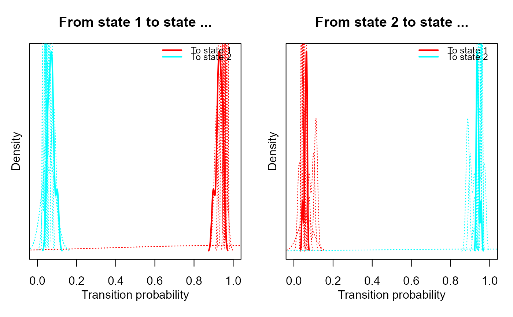

plot.mHMM plots the posterior densities for a fitted multilevel hidden
Markov model for the group and subject level parameters simultaneously. The
plotted posterior densities are either for the transition probability matrix
gamma, or for the emission distribution probabilities.
Usage
# S3 method for mHMM
plot(
x,
component = "gamma",
dep = 1,
col,
cat_lab,
dep_lab,
lwd1 = 2,
lwd2 = 1,
lty1 = 1,
lty2 = 3,
legend_cex,
burn_in,
...
)Arguments
- x
Object of class
mHMM, generated by the functionmHMM.- component
String specifying if the displayed posterior densities should be for the transition probability matrix gamma (
component = "gamma"), or for the emission distribution probabilities (component = "emiss"). In case of the latter and the model is based on multiple dependent variables, the user has to indicate for which dependent variable the posterior densities have to be plotted, seedep.- dep
Integer specifying for which dependent variable the posterior densities should be plotted. Only required if one wishes to plot the emission distribution probabilities and the model is based on multiple dependent variables.
- col
Vector of colors for the posterior density lines. If one is plotting the posterior densities for gamma, the vector has length
m(i.e., number of hidden states). If one is plotting the posterior densities for the emission probabilities, the vector has lengthq_emiss[k](i.e., the number of outcome categories for the dependent variablek).- cat_lab
Optional vector of strings when plotting the posterior densities of the emission probabilities, denoting the labels of the categorical outcome values. Automatically generated when not provided.
- dep_lab
Optional string when plotting the posterior densities of the emission probabilities with length 1, denoting the label for the dependent variable plotted. Automatically obtained from the input object
xwhen not specified.- lwd1
Positive number indicating the line width of the posterior density at the group level.
- lwd2
Positive number indicating the line width of the posterior density at the subject level.
- lty1
Positive number indicating the line type of the posterior density at the group level.
- lty2
Positive number indicating the line type of the posterior density at the subject level.
- legend_cex
A numerical value giving the amount by which plotting text and symbols in the legend should be magnified relative to the default.
- burn_in
An integer which specifies the number of iterations to discard when obtaining the model parameter summary statistics. When left unspecified, the burn in period specified at creating the
mHMMobject with the functionmHMMwill be used.- ...
Arguments to be passed to methods (see
par)
Value
plot.mHMM returns a plot of the posterior densities. Depending
on whether (component = "gamma") or (component = "emiss"),
the plotted posterior densities are either for the transition probability
matrix gamma or for the emission distribution probabilities, respectively.
See also
mHMM for fitting the multilevel hidden Markov
model, creating the object mHMM.
Examples
###### Example on package example data, see ?nonverbal
# First run the function mHMM on example data
# \donttest{
# specifying general model properties:
m <- 2
n_dep <- 4
q_emiss <- c(3, 2, 3, 2)
# specifying starting values
start_TM <- diag(.8, m)
start_TM[lower.tri(start_TM) | upper.tri(start_TM)] <- .2
start_EM <- list(matrix(c(0.05, 0.90, 0.05, 0.90, 0.05, 0.05), byrow = TRUE,
nrow = m, ncol = q_emiss[1]), # vocalizing patient
matrix(c(0.1, 0.9, 0.1, 0.9), byrow = TRUE, nrow = m,
ncol = q_emiss[2]), # looking patient
matrix(c(0.90, 0.05, 0.05, 0.05, 0.90, 0.05), byrow = TRUE,
nrow = m, ncol = q_emiss[3]), # vocalizing therapist
matrix(c(0.1, 0.9, 0.1, 0.9), byrow = TRUE, nrow = m,
ncol = q_emiss[4])) # looking therapist
# Run a model without covariate(s):
out_2st <- mHMM(s_data = nonverbal, gen = list(m = m, n_dep = n_dep,
q_emiss = q_emiss), start_val = c(list(start_TM), start_EM),
mcmc = list(J = 11, burn_in = 5))
#> Progress of the Bayesian mHMM algorithm:
#>
|
| | 0%
|
|======== | 11%
|
|================ | 22%
|
|======================= | 33%
|
|=============================== | 44%
|
|======================================= | 56%
|
|=============================================== | 67%
|
|====================================================== | 78%
|
|============================================================== | 89%
|
|======================================================================| 100%
#> Total time elapsed (hh:mm:ss): 00:00:05
## plot the posterior densities for gamma
plot(out_2st, component = "gamma")

# }